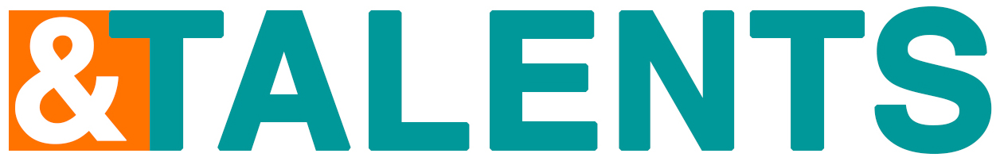

&TALENTS · Skill Matching
Ein Vergleich. Verschiedene Perspektiven.
iPhone 16: 393 × 852 Bildpunkte im Display. Bei ausreichend Platz in voller Größe dargestellt.
Keine Ansicht für diese Auswahl
Ändere einen Filter oder zeige alle Ansichten.

Designstudio Beispieldaten · keine Live-MatchesiPhone 16: 393 × 852 Bildpunkte im Display. Bei ausreichend Platz in voller Größe dargestellt.
Ändere einen Filter oder zeige alle Ansichten.